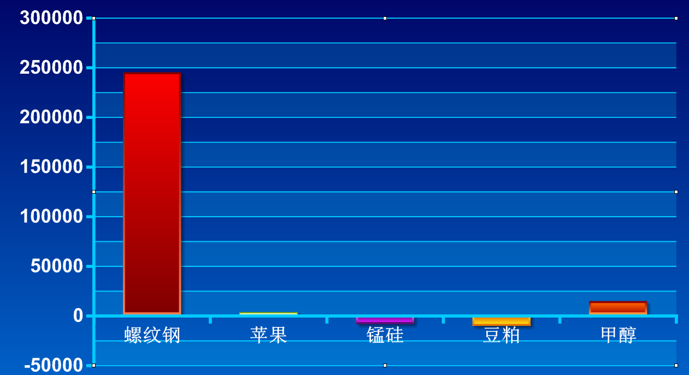
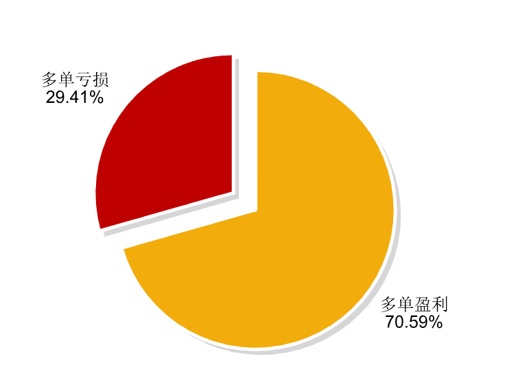
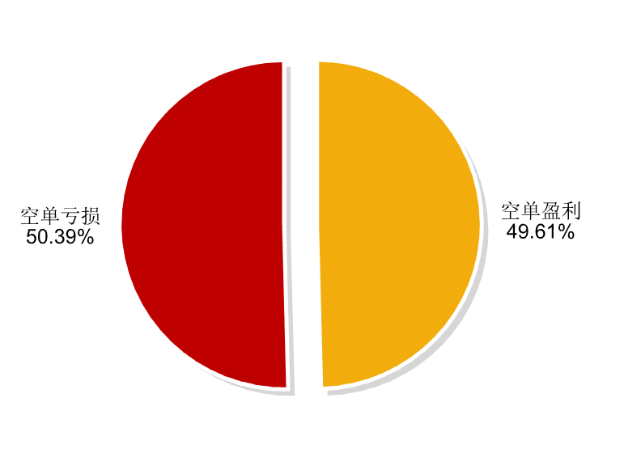
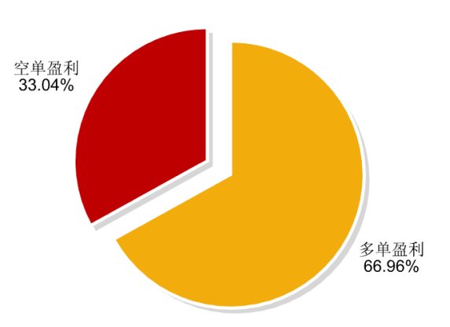

| 胜算 | 48.87% | 亏损笔数 （平仓） | 227.00笔 |
| 最大亏损率 | 26.76% | 最大盈利率 | 1638.35% |
| 最大连续盈利次数 | 10.00次 | 最大连续亏损次数 | 9.00次 |
| 盈利笔数（平仓） | 217.00笔 | 交易周期 | 711.00天 |
| 交易笔数（开仓、平仓） | 874.00笔 | 盈亏比 | 1.63:1 |
| 平均每笔亏损 | -1672.70元元 | 累计手续费 | 16280.79元 |
| 平均每笔盈利 | 2856.33元 | 平均每笔费用 | 18.63元 |
| 费用占比 | 6% | 累计净利润 | 364744.28元 |
|
|||
-
资金曲线
-
盈亏曲线
-
交易偏好

-
品种盈亏
 -
多单盈亏结构
 -
空单盈亏结构
 -
盈利结构
 -
亏损结构